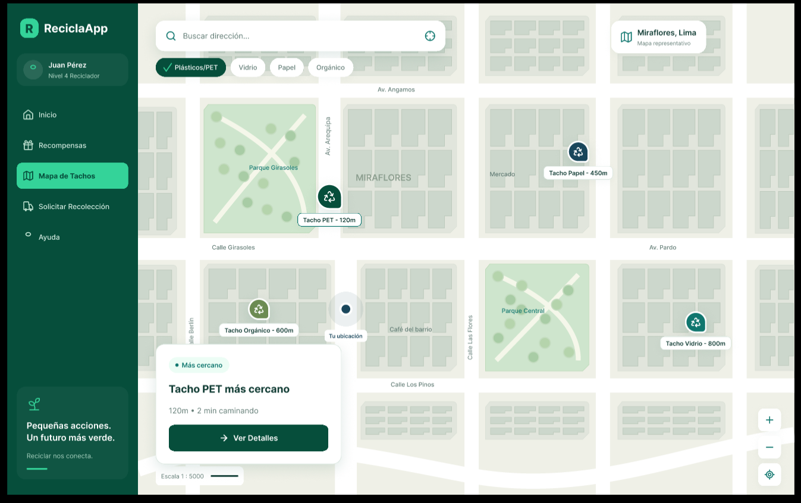
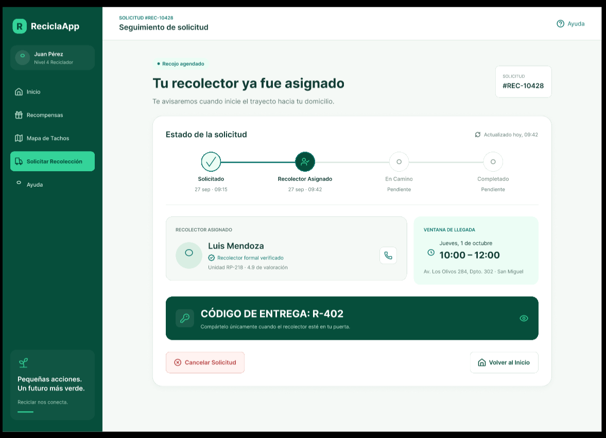
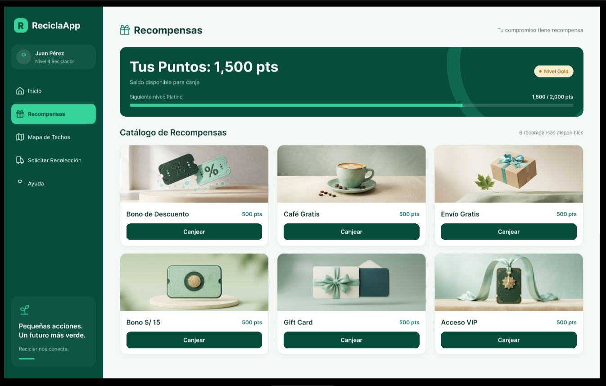
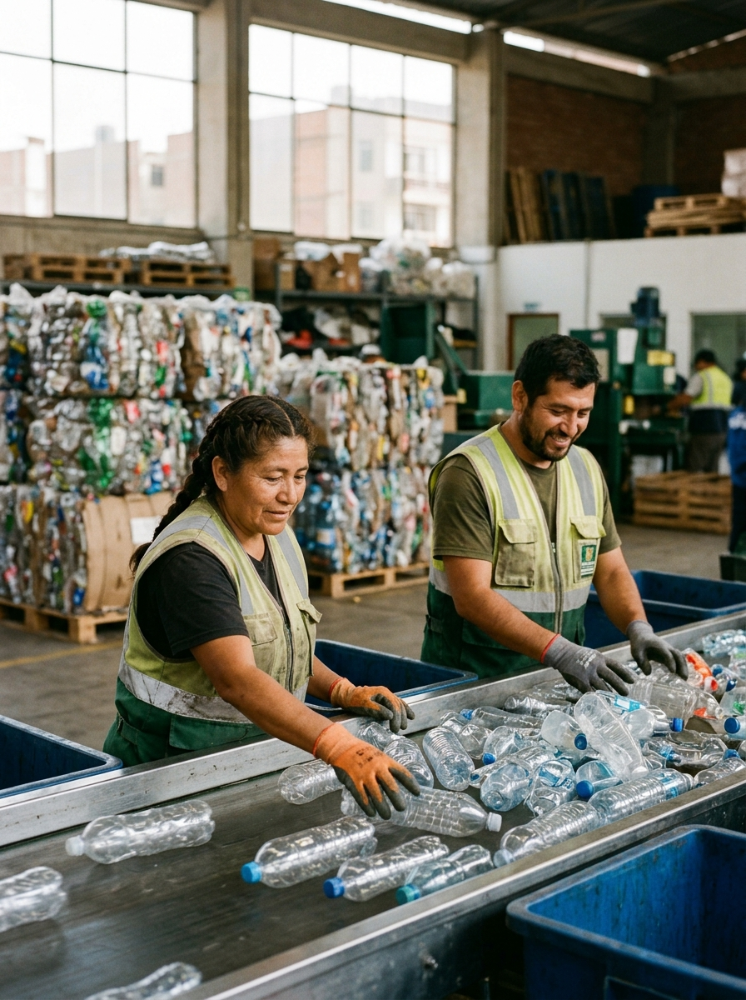
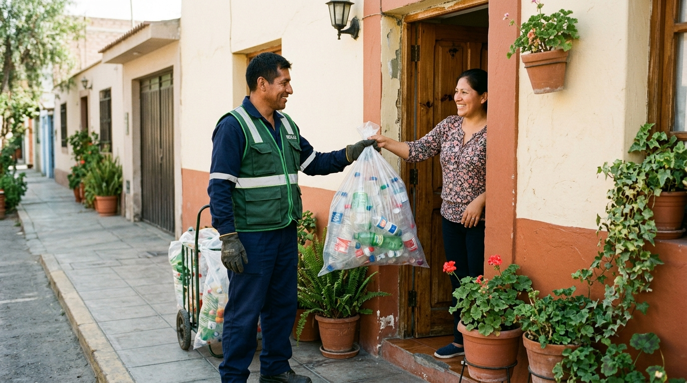

Somos una organización que promueve iniciativas relacionadas con la economía circular y el
consumo
responsable en el Perú. A través de nuestra aplicación Munay, transformamos la intención de
reciclar en
una acción sencilla: conectamos a los hogares con puntos de acopio estratégicos y recolectores
formales
a domicilio, recompensando a los usuarios con productos ecoamigables mientras reinsertamos el
plástico
limpio en la industria nacional.
Nuestra misión
Facilitar la gestión y recolección de residuos plásticos en la rutina diaria de las personas
mediante
tecnología accesible, conectando a ciudadanos, recicladores formales e industrias para
transformar los
desechos en nuevos recursos y premiar el compromiso ambiental.
Nuestra visión
Ser la plataforma referente de economía circular en el Perú, logrando que el reciclaje sea un
hábito
cotidiano, práctico y colaborativo en cada hogar y comercio para construir ciudades sostenibles
y libres
de contaminación plástica.
Qué hacemos
Nuestros Servicios
A través de Munay, facilitamos la gestión de residuos plásticos integrando herramientas digitales
accesibles.

Mapa interactivo: Muestra la ubicación clara de tachos de reciclaje accesibles
en
mercados, parques y universidades.

Recojo a domicilio: Permite solicitar que un recolector formal pase por casa a
llevarse los plásticos ordenados.

Recompensas: Ofrece beneficios en comercios locales y productos ecoamigables a
cambio del material plástico reciclado.
Impacto real
Proyectos de Economía Circular
Nuestras iniciativas están directamente alineadas con el ODS 12, garantizando modalidades de consumo
y
producción responsables en la ciudad.

Alianza con San Miguel Industrias (SMI): El plástico acopiado se destina a
grandes
empresas para fabricar botellas ecológicas y envases de larga duración.
Formalización de recicladores base: Integramos a los recicladores urbanos
brindándoles rutas eficientes y material limpio, mejorando sus ingresos.
Mercados sin bolsas de un solo uso: Retos comunitarios e incentivos digitales
para
fomentar el uso de bolsas de tela o mallas en comercios aliados.
Mira cómo lo hacemos
Galería de Impacto
Explora cómo transformamos la intención de reciclar en una acción sencilla.
Interfaz accesible de Munay para facilitar la ubicación de puntos.

Recolector formal recibiendo plásticos clasificados en un domicilio.
Voces de la comunidad
Testimonios de nuestra comunidad
Conoce lo que dicen los usuarios sobre su experiencia reciclando con Munay:
"Me alegra que las botellas no terminen en la basura común. Con Munay es mucho más seguro y
cómodo
coordinar el recojo desde mi casa".
"Tengo una herramienta en mi celular que me dice exactamente dónde reciclar en esta zona, ya no
tengo
que cargar el plástico en mi mochila durante horas".
Hablemos
Contáctanos
¿Tienes dudas sobre Munay o quieres registrarte como comercio aliado? Escríbenos.